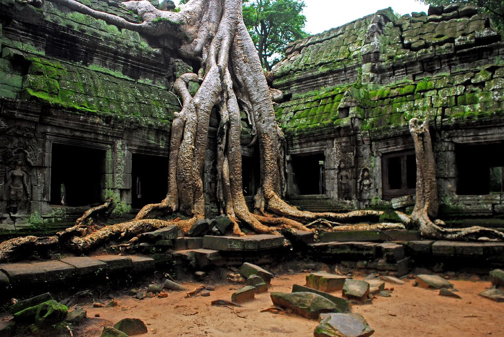

He comes from a land of spartan fighters. The name of the place is the Indegenous Forest. It’s special because that’s where all the Spartans are trained by the best fighters. It’s a beautiful place that’s surrounded by nature. Where the Spartans coexist with nature.
 "Angkor Wat Temple Complex : Ta Prohm" by lecercle is licensed under CC BY-NC-SA 2.0Click the links below to find out more about Darius